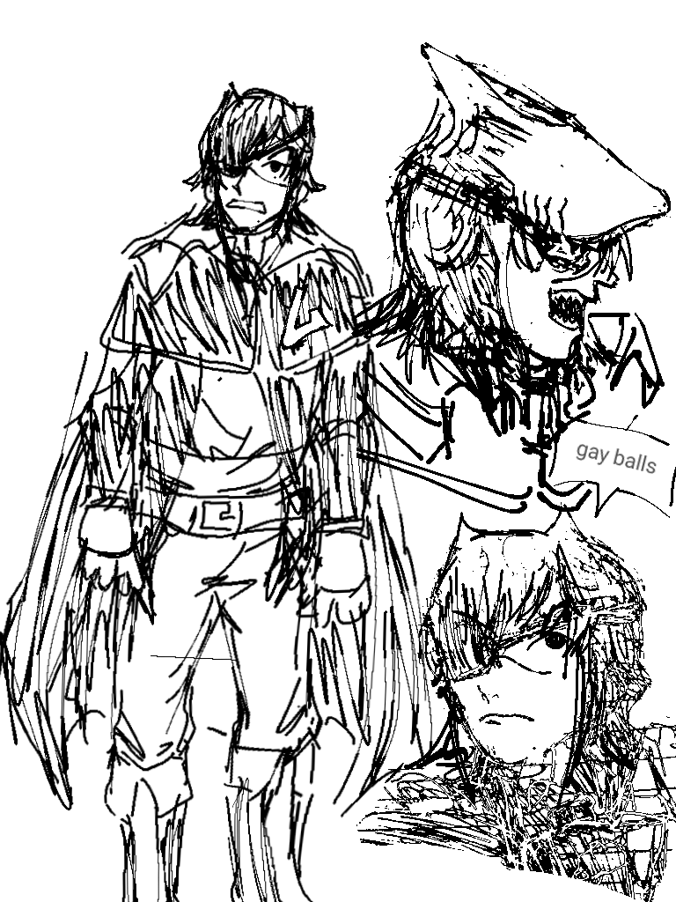
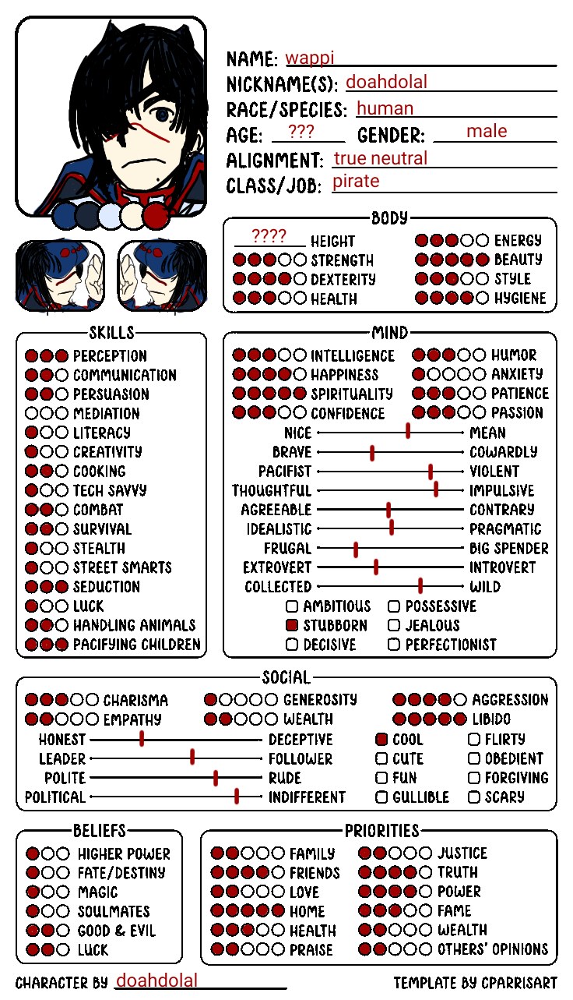

Wappi (doah)
Criado quarta-feira 03 agosto 2022
(wappi mudou cor de cabelo por causa do transporte cagado pra esse mundo)
acordei nesse mundo doido perto de uma taberna pirata que eu entrei pra procurar ajuda e acabei fazendo amigos que estavam procurando novas pessoas pra tripulaçao e fui escolhido por eles
logo apos entrar nessa tripulacao e treinar bastante meu capitao ruberval pirata do pau de pau (o nome dele e assim porque quando ele tava fugindo de uma bruxa pelo mar uma piranha mordeu pau dele fora dai colocaram um pinto de madeira nele, inclusive o passaro dele pousa no pau dele inves de pousar no ombro) me manda ir numa ilha pra pegar suprimento e quando chego lá desmaio de sono, quando acordo, estou dentro de uma casa, faço o que o capitao mandou rápido e volto correndo para meu barco (voltei correndo porque tava com medo de algum cara canibal que me colocou naquela casa me alcançar ou sei la), olho pra agua de canto de olho e no reflexo vejo versao de mim mesmo só que eu pareco com um tubarao, ignorei pensando que isso era só eu nervoso e voltei pra vila
depois de voltar nosso capitao disse que ia retornar onde ele perdeu o pinto pra quando ele achar o pau de novo pedir pra bruxa que ele tava correndo fazer magia reconstituidora peniana em troca de umas boas bimbadas (mentira ele so vai pegar recurso pra ela fazer as porra dela la)
Habilidades
regeneraçao rapida - corpo acostumou com quando tiver ferida, inflamacao ou coiso mais serio colocar na agua do mar porque os sais minerais que tem na agua tem efeito antibiotico ai depois de um tempo acostumado ele faz isso sozinho sem precisar da agua nem nada
senso anormal de equilibrio - depois de ficar tanto tempo no mar, desacostumar a ficar em terra, voltar de novo e conseguir curar enjoo de ficar na terra apos cair de cabeça no chao, possibilitando a mim dar socos de angulos fora do nomaal e ativando capacidade maxima de se equilibrar em qualquer canto
poder de agua: descobri lendo livros que após ter desmaiado de sono fui possuído por um espírito marítimo (nucleo de um bixo doidao tava preso embaixo d'água pra ele nao matar mais ninguem dai ele se libertou e entrou em mim) e consegui os seguintes poderes aquaticos:
nadar em qualquer coisa - faço o que eu nadar mudar da sua forma original pra líquida e depois que eu atravessar a coisa que eu nadei volta ao normal porém nao posso nadar na agua (as vezes eu nao posso controlar isso, dai quando to escorado em algum lugar eu só atravesso a parede e caio, inclusive, foi por causa disso que eu bati cabeça no chao e consegui o equilíbrio fodao)
controlar agua - posso fazer qualquer coisa com agua tipo fazer alguem mijar pelo cu porque 95% do mijo e agua, criar nevoa fortona, criar clone 100% feito de agua mas que só vai ter 10% de força minha, fazer chicote de agua que pode comprimir corpo do adversário podendo quebrar alguns ossos dele, entre outros
transformação - se eu tiver com mana cheiona posso transformar em tubarao e nessa transformacao meus poder aumenta dai tipo os clone que eu faço vai ter 30% de força invés de só 10% e ganho mais poder que eu só consigo fazer transformado tipo criar agua dai deixar cara submerso na agua né ai falo "eu moido ;3" dai nasce 5 tubarao e come o cara

